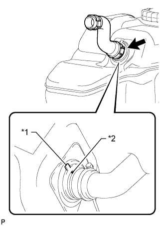
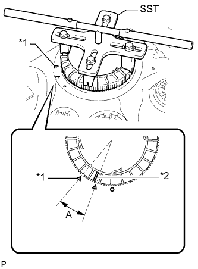
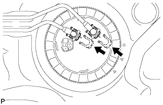
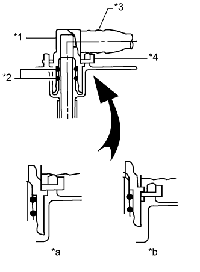

ТОПЛИВНЫЙ БАК (для 5-дверных моделей) > УСТАНОВКА |
| 1. УСТАНОВИТЕ ШЛАНГ, СОЕДИНЯЮЩИЙ ТОПЛИВНЫЙ БАК И НАЛИВНУЮ ТРУБУ |
|  |
Совместите метку со стороны топливного бака с меткой со стороны шланга.
| *1 | Метка со стороны топливного бака |
| *2 | Метка со стороны шланга |
Установите шланг, соединяющий топливный бак и наливную трубку, на топливный бак.
| 2. УСТАНОВИТЕ ЗАЩИТУ ТОПЛИВНОГО БАКА № 3 |
Установите защиту топливного бака № 3 и закрепите ее 4 зажимами.
Заверните 2 болта.
| 3. УСТАНОВИТЕ ПРОДУВОЧНЫЙ ПАТРУБОК ТОПЛИВНОГО БАКА В СБОРЕ (для моделей с одиночным баком) |
Слегка смажьте новую прокладку бензином или консистентной смазкой и установите ее на топливный бак.
 |
Совместите выступ на продувочном патрубке топливного бака с канавкой топливного бака.
| *1 | Выступы |
| *2 | Канавка |
Установите продувочный патрубок топливного бака на топливный бак.
Установите новый фиксатор на топливный бак. Удерживая продувочный патрубок топливного бака, затяните фиксатор рукой на один полный оборот.
| *1 | Начальная метка (со стороны топливного бака) |
| *2 | Начальная метка (со стороны фиксатора) |
 |
 |
Установите SST на крепежную деталь.
|  |
С помощью SST затягивайте фиксатор, пока его метка не будет находиться в диапазоне A на топливном баке, как показано на рисунке.
| *1 | Метка со стороны топливного бака |
| *2 | Метка со стороны держателя |
| 4. УСТАНОВИТЕ ТОПЛИВОЗАБОРНИК С БЕНЗОНАСОСОМ И ДАТЧИКОМ УРОВНЯ ТОПЛИВА В СБОРЕ (для моделей с двойным топливным баком) |
Слегка смажьте новую прокладку бензином или консистентной смазкой и установите ее на топливный бак.
|
Совместите выступ на топливозаборнике с бензонасосом и датчиком уровня топлива с канавкой топливного бака.
| *1 | Выступы |
| *2 | Канавка |
Установите топливозаборник с бензонасосом и датчиком уровня топлива на топливный бак.
Установите новый фиксатор на топливный бак. Удерживая топливозаборник с бензонасосом и датчиком уровня топлива, затяните фиксатор рукой на один полный оборот.
| *1 | Начальная метка (со стороны топливного бака) |
| *2 | Начальная метка (со стороны фиксатора) |
|
|
Установите SST на крепежную деталь.
С помощью SST затягивайте фиксатор, пока его метка не будет находиться в диапазоне A на топливном баке, как показано на рисунке.
| *1 | Метка со стороны топливного бака |
| *2 | Метка со стороны держателя |
| 5. УСТАНОВИТЕ ВОЗВРАТНЫЙ ТОПЛИВОПРОВОД В СБОРЕ И ПОДАЮЩИЙ ТОПЛИВОПРОВОД В СБОРЕ (для моделей с одиночным топливным баком) |
|  |
Установите возвратный топливопровод и подающий топливопровод и закрепите их 2 фиксаторами.
|  |
| *1 | Соединитель топливопровода |
| *2 | Кольцевое уплотнение |
| *3 | Топливопровод |
| *4 | Фиксатор соединителя топливопроводов |
| *a | ПРАВИЛЬНО |
| *b | НЕПРАВИЛЬНО |
Установите возвратный топливопровод и подающий топливопровод на топливный бак.
| 6. УСТАНОВИТЕ ПОДАЮЩИЙ ТОПЛИВОПРОВОД, ВОЗВРАТНЫЙ ТОПЛИВОПРОВОД И ПОДАЮЩИЙ ТОПЛИВОПРОВОД № 2 (для моделей с двойным топливным баком) |
Установите подающий топливопровод, возвратный топливопровод и подающий топливопровод № 2 и закрепите их 3 фиксаторами.
| *1 | Соединитель топливопровода |
| *2 | Кольцевое уплотнение |
| *3 | Топливопровод |
| *4 | Фиксатор соединителя топливопроводов |
| *a | ПРАВИЛЬНО |
| *b | НЕПРАВИЛЬНО |
Установите подающий топливопровод на топливный бак.
Установите возвратный топливопровод на топливный бак и закрепите его зажимом.
Установите подающий топливопровод № 2 на топливный бак и закрепите его зажимом.
| 7. УСТАНОВИТЕ ПОДАЮЩИЙ ТОПЛИВОПРОВОД № 4 В СБОРЕ И ТРУБКУ ТОПЛИВОЗАБОРНИКА В СБОРЕ (для моделей с двойным топливным баком) |
Установите подающий топливопровод № 4 и трубку топливозаборника и закрепите их 2 фиксаторами.
| *1 | Соединитель топливопровода |
| *2 | Кольцевое уплотнение |
| *3 | Топливопровод |
| *4 | Фиксатор соединителя топливопроводов |
| *a | ПРАВИЛЬНО |
| *b | НЕПРАВИЛЬНО |
Установите трубку топливозаборника на топливный бак и закрепите ее зажимом.
Установите подающий топливопровод № 4 на топливный бак и закрепите его зажимом.
| 8. УСТАНОВИТЕ АМОРТИЗАТОР ТОПЛИВНОГО БАКА |
Установите 3 амортизатора топливного бака на топливный бак.
| 9. УСТАНОВИТЕ ТОПЛИВНЫЙ БАК В СБОРЕ |
Установите топливный бак на телескопический гидравлический домкрат и поднимите домкрат.
Установите 2 хомута крепления топливного бака и зафиксируйте их 2 штифтами и 2 фиксаторами.
Подсоедините 2 хомута крепления топливного бака и зафиксируйте их 2 болтами.
| 10. ПОДСОЕДИНИТЕ ШЛАНГ, СОЕДИНЯЮЩИЙ ТОПЛИВНЫЙ БАК И НАЛИВНУЮ ТРУБУ |
Подсоедините шланг, соединяющий топливный бак и наливную трубу, к наливной трубе топливного бака.
| 11. ПОДСОЕДИНИТЕ ТРУБКУ САПУНА ТОПЛИВНОГО БАКА В СБОРЕ (для моделей с одиночным топливным баком) |
Подсоедините трубку сапуна топливного бака (Нажмите здесь).
| 12. ПОДСОЕДИНИТЕ ТРУБОПРОВОД ОТСЕЧКИ ТОПЛИВА (для моделей с одиночным топливным баком) |
| 13. ПОДСОЕДИНИТЕ ТРУБКУ САПУНА ТОПЛИВНОГО БАКА В СБОРЕ (для моделей с двойным топливным баком) |
Подсоедините трубку сапуна топливного бака (Нажмите здесь).
| 14. ПОДСОЕДИНИТЕ ВОЗВРАТНЫЙ ТОПЛИВОПРОВОД В СБОРЕ И ПОДАЮЩИЙ ТОПЛИВОПРОВОД № 2 В СБОРЕ (для моделей с двойным топливным баком) |
Подсоедините возвратный топливопровод и подающий топливопровод № 2 (Нажмите здесь).
| 15. ПОДСОЕДИНИТЕ ТРУБОПРОВОД ОТСЕЧКИ ТОПЛИВА (для моделей с двойным топливным баком) |
Подсоедините трубопровод отсечки топлива (Нажмите здесь).
| 16. ПОДСОЕДИНИТЕ ПОДАЮЩИЙ ТОПЛИВОПРОВОД № 4 В СБОРЕ И ТРУБКУ ТОПЛИВОЗАБОРНИКА В СБОРЕ (для моделей с двойным топливным баком) |
Подсоедините подающий топливопровод № 4 и трубку топливозаборника (Нажмите здесь).
| 17. ПОДСОЕДИНИТЕ ВОЗВРАТНЫЙ ТОПЛИВОПРОВОД В СБОРЕ (для моделей с одиночным топливным баком) |
| 18. ПОДСОЕДИНИТЕ ПОДАЮЩИЙ ТОПЛИВОПРОВОД В СБОРЕ (для моделей с одиночным топливным баком) |
| 19. ПОДСОЕДИНИТЕ ПОДАЮЩИЙ ТОПЛИВОПРОВОД В СБОРЕ (для моделей с двойным топливным баком) |
| 20. УСТАНОВИТЕ ЗАЩИТУ ТОПЛИВНОГО БАКА № 1 В СБОРЕ |
Установите защиту топливного бака № 1 и закрепите ее 6 болтами.
Для моделей с частичной крышкой:
Установите защиту топливного бака № 1 и закрепите ее 4 болтами.
| 21. УСТАНОВИТЕ КРЫШКУ ТЕХНОЛОГИЧЕСКОГО ОТВЕРСТИЯ ЗАДНЕГО ПОЛА |
Подсоедините разъем топливного насоса и датчика уровня топлива.
Установите крышку технологического отверстия заднего пола и закрепите ее 3 винтами.
| 22. УСТАНОВИТЕ ЛЕВОЕ ЗАДНЕЕ СИДЕНЬЕ В СБОРЕ |
Для сидений раздельного типа 60/40 с двойным складыванием с левой стороны:
Установите левое заднее сиденье в сборе (Нажмите здесь).
Для выдвижного раздельного сиденья 60/40 с функцией облегчения посадки с левой стороны:
Установите левое заднее сиденье в сборе (Нажмите здесь).
| 23. ПОДСОЕДИНИТЕ ПРОВОД К ОТРИЦАТЕЛЬНОМУ ВЫВОДУ АККУМУЛЯТОРНОЙ БАТАРЕИ |
| 24. УДАЛИТЕ ВОЗДУХ ИЗ ТОПЛИВНОЙ СИСТЕМЫ |
 |
С помощью ручного насоса, установленного на крышке топливного фильтра, удалите воздух из топливной системы. Продолжайте прокачку, пока сопротивление насоса при работе не возрастет.
Запустите двигатель.
Если двигатель запускается, перейдите к следующему шагу.
Если запуск двигателя невозможен, прокачайте систему снова с помощью ручного насоса до повышения сопротивления насоса (см. процедуры выше). Затем запустите двигатель.
Выключите зажигание.
Подсоедините портативный диагностический прибор к DLC3.
Включите зажигание (IG) и портативный диагностический прибор.
Сбросьте коды DTC (Нажмите здесь).
Запустите двигатель.*1
 |
Войдите в следующие меню: Powertrain / Engine and ECT / Active Test / Test the Fuel Leak.*2
| *a | Для справки Испытание в режиме Active Test |
Выполните следующее испытание 5 раз с интервалами включения/выключения 10 с: Active Test / Test the Fuel Leak.*3
После 5-го испытания в режиме Active Test дайте двигателю поработать на холостом ходу в течение не менее 3 мин.

Войдите в следующие меню: Powertrain / Engine and ECT / DTC.
Считайте текущие коды DTC.
Сбросьте коды DTC (Нажмите здесь).
Повторите операции с *1 по *3.
Войдите в следующие меню: Powertrain / Engine and ECT / DTC.
Считайте текущие коды DTC.
| 25. ПРОВЕРЬТЕ, НЕТ ЛИ УТЕЧЕК ТОПЛИВА |